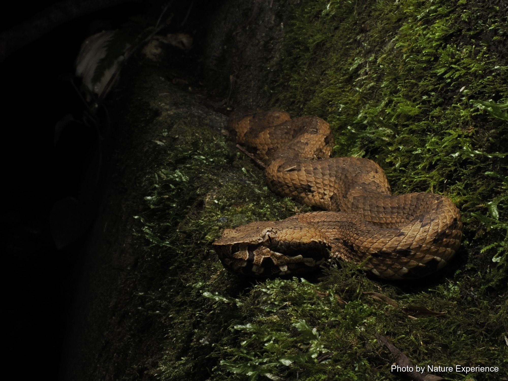
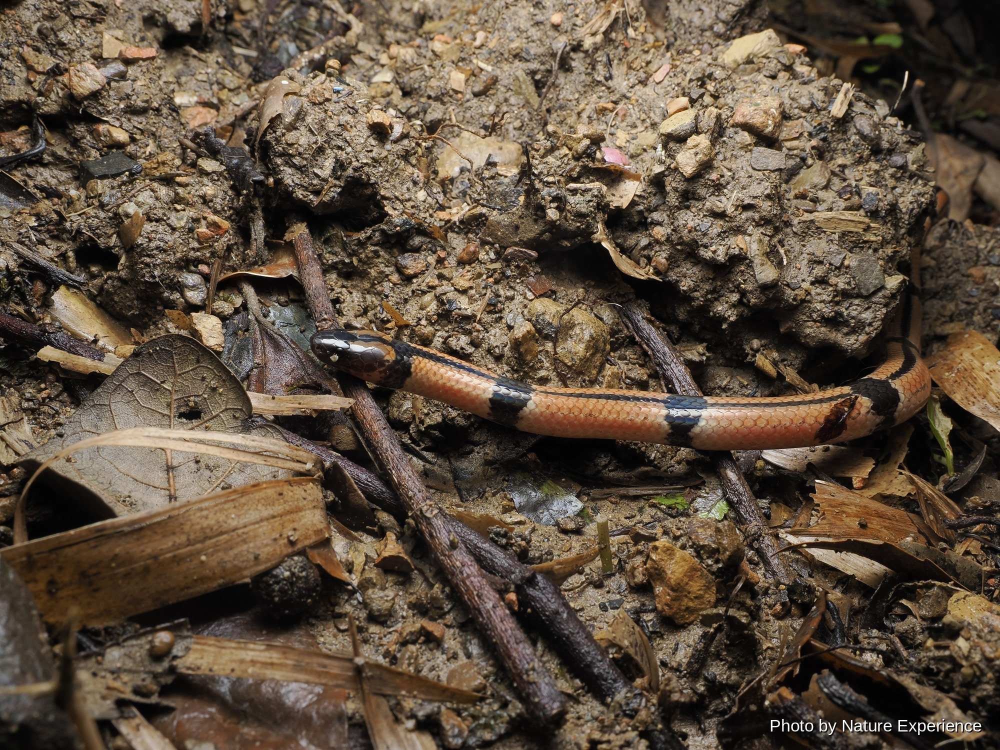

Serpiente Akamata
Alcanza hasta unos 200 cm. Se observa con más facilidad entre mayo y noviembre. Tiene .

CREATURES / SNAKES
Las serpientes que se encuentran en el bosque nocturno de Amami Oshima. Algunas venenosas, otras no, cada una viviendo en su propio entorno preferido, el suelo del bosque o la orilla del agua.
ABOUT
En Amami Oshima viven diversas serpientes, entre ellas la Habu. La mayoría son nocturnas, y al anochecer, cuando el bosque se queda en silencio, empiezan poco a poco a activarse.
Incluso entre las serpientes, el hábitat, las horas de actividad y la dieta difieren de una especie a otra. Algunas viven en lo profundo del bosque, mientras que otras aparecen cerca del agua o entre la hierba.
Al caminar por el bosque nocturno de Amami, puede encontrarse con serpientes como estas. Si ve una, primero mantenga la distancia y luego observe con calma su forma y sus movimientos.
En Amami Oshima puede encontrarse con serpientes venenosas como la víbora Habu y la víbora Hime Habu. Vigile dónde pisa y la hierba a su alrededor por la noche, y nunca se acerque ni toque una serpiente, aunque la vea.
SNAKES OF AMAMI
Un vistazo a las serpientes registradas en Amami Oshima que puede encontrar en el bosque nocturno. Haga clic en una foto o un nombre para ver la página completa de esa especie.
Alcanza hasta unos 200 cm. Se observa con más facilidad entre mayo y noviembre. Tiene .
Alcanza hasta unos 110 cm. Se observa con más facilidad entre mayo y noviembre. Tiene .

Alcanza hasta unos 226 cm de longitud, una de las serpientes más grandes de la isla. S.

Alcanza hasta unos 80 cm. Resistente al frío, en Amami Oshima puede observarse durante.

Alcanza hasta unos 50 cm. Se observa con más facilidad hacia mayo y hacia septiembre. .

Alcanza hasta unos 100 cm. Se observa con más facilidad entre mayo y noviembre. Es pri.

Alcanza hasta unos 55 cm. El dorso es de color pardo negruzco o pardo oscuro, con una .

EXPLORE MORE
Elija una categoría para ver más fauna de Amami Oshima.
NIGHT FIELD TOUR
Únase a un guía y busquen juntos la fauna en el bosque de noche.
Vea detalles y precios del tour nocturno →